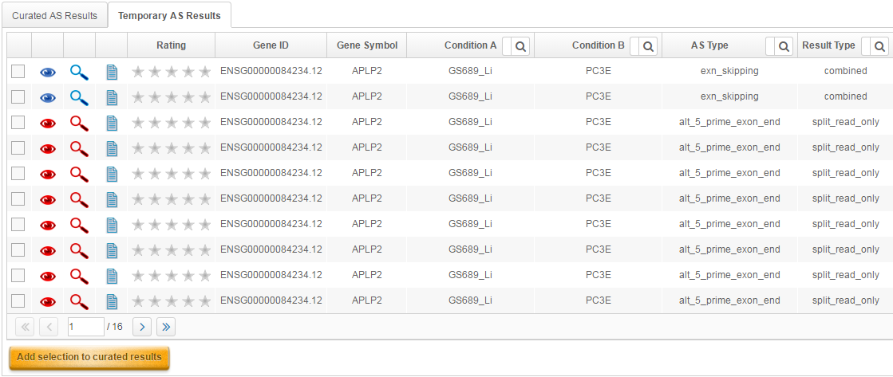
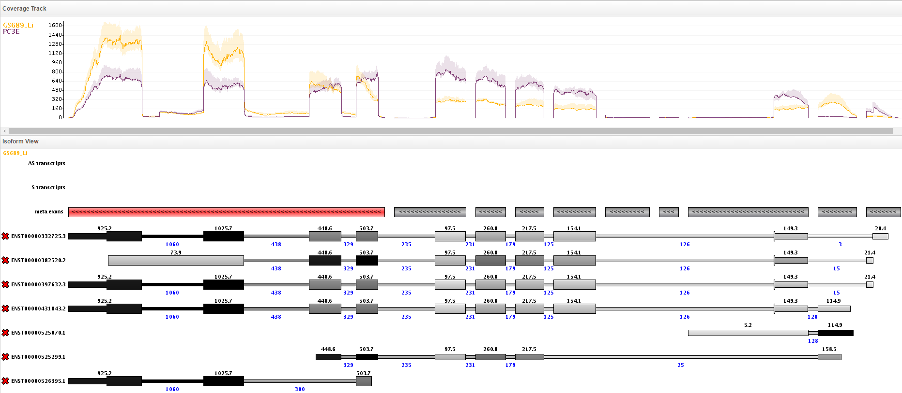
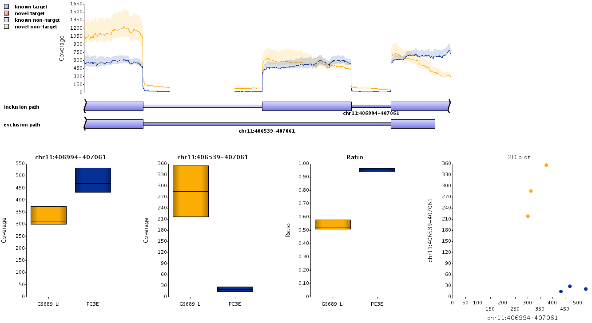

Preamble
This tutorial is supposed to give you an introduction to the basic functions provided by Manananggal. We will use the example data set included in the test installation. The original data was published with "rMATS: robust and flexible detection of differential alternative splicing from replicate RNA-Seq data" by Shen et al. (2014) and is available at the NCBI SRA (Accession-nr.: SRS354082).
We will focus on simple alternative splicing events in this tutorial.
Data selection
When Manananggal is opened it will choose an appropriate window size automatically . For some applications it might be useful to change this value (e.g. if the gene has too many exons to be drawn correctly, you will have to increase this value), but for now we will stick to the value that was automatically estimated.
Select the prostate cancer data set and notice how the values in the other fields change automatically. Manananggal selects the first condition type available in the data set. In this example we only have one condition type named "condition". It also selects the first available sample group for the given condition type that is used to display the coverage values in the isoform plot. Further, a default gene annotation is selected. To retrieve the best results, select the gene reference that you used to generate your junction counts.
Now type in APLP2 in the gene selection field and confirm the gene by hitting enter twice or selecting the gene from the list of genes that opens when typing. If you chose to press enter, be sure to hit enter twice. The first hit only closes the list of gene names.
The visual representation
The coverage track and isoform view will now be populated with data and look similar to this:
The image shows the coverage for all exons of all isoforms for the selected gene at the top and all isoforms at the bottom. The shading of the exons corresponds to the coverage they have, where darker colors represent higher coverages. The black numbers at the exons indicate the average exon coverage and blue numbers indicate the average coverage of the junction spanning reads for the selected sample group. You can see which sample group is selected at the top-left corner of the isoform view.
At the top of the isoform view are three tracks indicating, from top to bottom, the presence of overlapping antisense transcripts, sense transcripts and the location of the meta exons. Some meta exons may be colored in red, indicating that the meta exon could be involved in an exon skipping event. There will be more isoforms in your window than are shown here, because we cut the image for the sake of readability.
Notice the flat lines at the bottom of the coverage track window. These correspond to exons that are either not or very lowly expressed in the data set. Therefore, it might be useful to get rid of them before proceeding with the analysis.
Isoform selection
One way to remove these isoforms is to click on the button.
This will result in the following picture:
The plot changed slightly. You will notice that seven isoforms have been unselected in the isoform selection. Let's take a closer look at these isoforms and see why they were removed.
Please note the colored text in the top-left of the isoform view. This indicates which group was selected. Thus, the numbers shown here correspond to the coverage values present in the GS689_Li samples. You can switch to the PC3E samples by selecting them as active group in the settings menu that we have previously discussed.
To understand why these isoforms have been removed it is important to know the values of the coverage thresholds. You can find these values in the advanced options menu in the top right of the web interface. You will notice that (by default) the minimum junction coverage is set to 3, the minimum coverage per base to 5 and the minimum fraction of an exon that must be covered is 70%.
One thing all of the seven isoforms shown above have in common is an exon located somewhere in the middle of the gene that is either lowly covered or that has a very low junction read support. However, for an isoform to be removed it must have low coverage or junction support in all condition groups, which you could check by switching to the PC3E samples.
Take another look at the last coverage plot that we generated. It still features many exons that are probably not expressed in the data set. Thus it would be desirable to remove these. If you scroll through the remaining isoforms, you will notice that most of these remaining unexpressed exons are located at the start or end of a transcript. Because the expressed UTRs often differ from the annotated UTRs we decided to exclude them from the automatic isoform removal to avoid discarding valuable information. There are four ways to get rid of these isoforms.
- Unselect them from the isoform selection window. After you are satisfied with your selection, press the button.
- Click on the red cross located in front of the undesired isoform. This will automatically invoke a redraw.
- Check that you would not miss any essential exons if you would let all isoforms with insufficient coverage at the first or last exon be automatically be removed. Then unselect the "auto. removal: skip first/last exons" option in the advanced options menu and press the button again. This is a much more aggressive way to remove isoforms with lowly expressed features (exons/junction). However, there might still be some isoforms that you have to remove by hand (e.g. due to exons that may be terminal in some isoforms but in the middle for others). Reselect the "auto. removal: skip first/last exons" option to ensure that it will be used during the analysis phase.
- Use the buttons below the isoform selection window to remove isoforms with less than x exons.
As you probably have already noticed, there are two exon skipping events in this gene. These events are also indicated on the meta exon track at the top of the isoform view. Manananggal detected these as exon skipping events and thus colored them in red. For the time being, only exon skipping events are highlighted. Inspecting the remaining isoforms, it appears that we can safely remove all isoforms with 10 or less exons without loosing important information. Therefore I decided to use option 4, which will then generate the following image:
There are still some isoforms that are not very interesting, thus I manually removed the two isoforms with unexpressed first exon and the two isoforms that skip exons 2 and 3:
This shows a very nice representation of the isoforms that are likely expressed, which makes it much easier to spot the alternative splicing events. One important thing to do is to hit the button after you are satisfied with your isoform and sample selection. This will update the predictions of alternative splicing events that you can find in the very top-right of your browser window. Let's have a look at the result list before pressing that button (Make sure to open the temporary AS results tab from the result section).
Result list

This represents the results that are generated whenever a new gene is selected. Therefore, the algorithm used all isoforms to predict alternative splicing events. As you can see at the bottom, there are 16 pages with up to 10 results each, thus more than 150 events were identified. This number of way too high and the number of real events is probably much lower. Another thing you can see is that most events have a red 'eye' symbol, whereas only two have a blue 'eye' symbol on this first page. Blue eyes indicate events that correspond to annotated splicing events whereas red eyes indicate events that use splice junctions that have not been annotated. In genes with high coverage there is often mismapping near splice junctions which leads to vast numbers of splicing events around the same exons. You can filter for novel and known events by clicking on the corresponding column header (not visible here). However, we don't want to do that just yet.
One important piece of information is given in the "Result Type" column. It specifies what information supports the splicing events. There are three different levels available.
- An alternative splicing event may have only been detected by different PSI scores (indicated as "split_read_only").
- An alternative splicing event may have only been detected by changes in the coverage ratio (indicated as "ratio_only").
- An alternative splicing event may have support from both sources mentioned above (indicated as "combined").
Most of the events listed belong to the "split_read_only" category. To see only the most likely events we set a filter to the "Result Type" column and unselect everything but "combined". This results in a much smaller list with only 4 results left.

You can view these results by clicking on the eye symbol that will show all isoforms that may be part of the event. Let's try this and click on the eye symbol of the first event. Now we get the following image:
Now, this looks awfully familiar. One obvious difference to the previous plots is that the color of the isoforms changed. All exons that are not part of the splicing event are now colored in white and the important exons and junctions are colored in red. Similar to before, darker colors represent higher coverages. You can also notice that only one of the two junctions adjacent to the alternatively spliced exons has been colored. This is also the reason why there are still four results in the result lists instead of two, although it is obvious that there only two alternative splicing events. There is one result for each of the two possible junction pairs.
It also demonstrates that for many splicing events it can be very effective to start the visual inspection by selecting one of the alternative splicing events from the result list. However, for some very complex genes this approach might not be sufficient.
Let's get back to the isoforms that we filtered manually before. We went down to three isoforms that seemed important for the alternative splicing events. If you hit the button after choosing only those three isoforms and then filter the result list for "combined"-type events, you will get the same four events in the result list. The difference is, that if you now select one of the results it will only show isoforms that have been selected before. Thus, we get the following image:
Another helpful feature is the relative coverage track. You can choose between the normal coverage track, the log2 coverage track and the relative coverage track in the options menu. Here is such a plot. Compared to the normal coverage track, the relative coverage track gets rid of most of the variation within each exon. Thus it appears as if there was an almost straight line for the coverage ratio across all exons, except for the two alternatively spliced exons that appear as bumps in the coverage ratio track.
Alternative transcript start
Let's have a look at another example. The gene SIGIRR has an alternative splicing event that utilizes multiple start exons. Opening the gene shows an image similar to this:

Please note that the gene is on the reverse strand and that your image will have more isoforms than are shown here.
Next, filter the result list for "combined"-type events again. This will give you the following alternative splicing candidates:
There are now results with different "AS types". Similar to before, there are exon skipping events but also alternative start events. Multiple alternative start and end exon categories exist.
For example, an alternative start exon can be of the type "alt_start_unique_jun" or "alt_start_unique_jun_double". The former refers to alternative splicing events that identified a difference between two start exons,
but only one of them showed a coverage ratio change. The latter refers to events where both exons involved in the event show a difference in the coverage ratio. Usually both exons should show a coverage ratio difference,
but we will see that this is not the case for all alternative start exons in a moment.
A third and fourth type of alternative start/end exons exists that are called "alt_start_shared_jun" and "alt_start_shared_jun_double".
The difference to the previously mentioned events is that these exons are central exons for other isoforms. Thus they are more likely to actually refer to exon skipping events or false positives.
Let's have a look at the two events with "double" support.
The first event appears to be the major splicing event that explains a large amount of the difference between the sample groups. The second event is more subtle and mostly reflects that PC3E samples us two different start exons. However, apparently, there must be more alternative splicing events because the coverage increases in the last four exons. This is also where the exon skipping events come into play. Click on the eye icon of one of them to make it show up.

Switching the active group from GS689_Li to PC3E shows that the junction that skips the exon is almost never realized in the PC3E samples (coverage 20), whereas it is frequently used in the GS689_Li samples (coverage 300, as shown in the image). Another way to look at this is to click the "magnifying glass" symbol that is located next to the eye symbol. It opens a popup window showing the following information:

At the top is a zoomed in view of the splicing event followed by multiple box plots and a dot plot. The first two box plots show the coverage of the first and second junction respectively. The third box plot shows the ratio of the coverage of the two junctions and the dotplot plots the coverage of one junction against the other. These plots can be very helpful when you are looking for outliers, when you have a large number of sample groups or if only a subset of your samples shows the splicing event.
There is still one explanation missing. It appears that there should be a third transcript start. To make this more visible I selected a subset of isoforms to generate this plot:
The alternative start exon of the 4th isoform is not reported as a "combined"-type result because the exon did not popup in the coverage ratio difference. The problem with this gene is that some exons have a higher expression in the GSL689_Li samples and other exons in the PC3E samples. The last alternative start exon itself is also very variable in coverage because it is a central exon in one isoform and an alternative start exon in another. Therefore the event was only reported as a "split_read" only event:
However, even without the "combined"-type result it was quite obvious that there was another start exon, wasn't it? Thus, if you get an alternative splicing event in an interesting gene (e.g. by running rMATS, JSplice, DEXSeq, etc.), it makes a lot of sense to visually inspect it.
Exon extension
To finish this tutorial, we will take a look at an exon extension event in CSNK1A1. Open the gene to get the following view:
Although you might have spotted the event already, take a look at the list of alternative splicing events. You will notice that most events refer to either "alt_3_prime_exon_end" or "alt_5_prime_exon_end" events.
All of them are of the "split_read_only"-type, because in the current state Manananggal does not consider coverage ratio differences for exon extension events.
As mentioned before, many of the "split_read_only"-type events will be false positives because they refer to mapping artifacts. Therefore, filter the list of splicing events for those that use known splice junctions only by
clicking on the "novel junction" column header. Afterwards only two results should be left. One "alt_3_prime_exon_end" event and a "alt_start_shared_jun" event. The latter has some quite large p-value, thus we will
ignore it. Now click on the eye symbol of the exon extension event to get a better picture of the event.
Due to the coloring of the junctions involved in the event it is now much easier to spot the difference.
Another notable fact, that becomes visible in this example, is the incomplete annotation of UTRs. As you can see, there is probably one 3'UTR that is shorter than the first annotated 3'UTR but longer than the second 3'UTR.